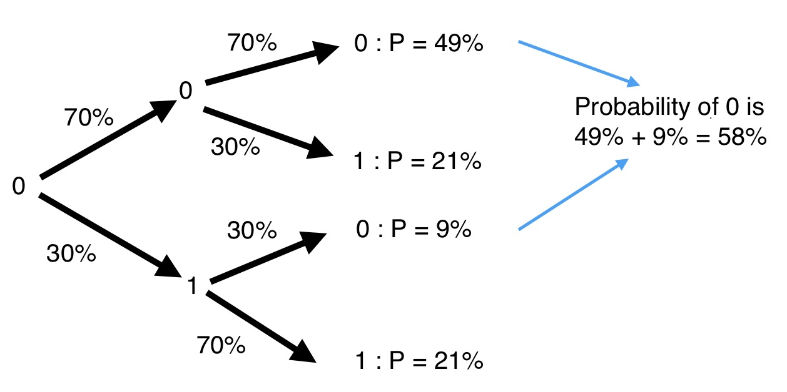

By David Kemp
@david_b_kemp
DRAFT
You have probably heard of quantum computers.
You have probably heard that they are faster than conventional computers.
Perhaps you have heard of quantum bits, or qubits.
Maybe you have even heard of the puzzling notion that qubits can have the values 0 and 1 both at the same time.
Let me try to explain what this really means.
I assume you know what binary bits are.
For instance, 110 is binary for six. See Wikipedia for more about binary numbers.
Conventional bits are represented using many different approaches: e.g. using two different voltages on a wire, points on a magnetic disk magnetized in different directions, pulses of light on a glass fibre, etc. etc.
Just like bits, qubits have a binary state.
Qubits use quantum phenomenon like the nuclear spin direction of individual atoms.
e.g. use “clockwise” for 0 and “anti clockwise” for 1. Conventionally called “spin up” and “spin down”. Quantum spin is a bit like spinning things in the classical world, but has some very important differences we will touch on in a moment.
Consider the conventional NOT (or bit-flip) operator. 1 and 0 can represent logical true and false. NOT true is false, and NOT false is true. And so, NOT of 1 is 0, and NOT of 0 is 1.
For example, performing a NOT operation on the right most bit of the binary number 111 results in 110.
In what follows, it will be convenient to represent state of a system by listing all possible states and placing a blue disk next to the current state.
Click the button labelled “Not bita” to apply the NOT operation to the left bit, and click the button labelled “Not bitb” to apply the NOT operation to the right bit:
Random NOT: A NOT operator that has a specified chance of flipping a bit.
Although not very common, it is still just a classical (non-quantum) operator.
Consider applying a “Random NOT” twice to a bit whose initial value is 0, where the NOT has, for instance, a 30% chance of flipping the bit. What is the probability of the final state being 0?
There are two paths leading to a final state of 0:
And so the final state will be 0 with a probability of 49% + 9% = 58%
Next we provide an interactive animation of the Random NOT operator.
The blue disk now splits in two so that we can track the different possible outcomes.
The probability of being in a state is represented by the radius of the disk.
Press the “Random NOT” button multiple times and note how the arrows add head to tail.
Note that there is still nothing quantum mechanical about this yet.
When a conventional computer has various probabilities of being in different states, e.g. because of random NOT operations, it is of course in reality in only one of those states. We just don't know which one.
If you peek at the system to determine its actual state, then the probabilities all collapse so that one state has a probability of 1, and all the others have a probability of 0.
Remember, the larger the blue disk, the more likely the system will turn out to be in that state.
In quantum computing, the word meausurement refers to this act of peeking.
Press the “Random NOT” button multiple times and then press the “measurement” button.
Note that there is still nothing quantum mechanical about this yet.
The Hadamard is a special quantum operator that can be applied to qubits.
Initially the Hadamard seems like a Random NOT with 50% chance of success.
But you will be surprised by what comes next...
Things start to get weird when look at the Hadamard of 1.
Look carefully at the arrow directions.
Confused? You should be if this is all new to you. Please hang in there for a while longer.
The arrow directions represent what physicists call phase:
In the case of nuclear spin, phases can be manipulated by applying electric and/or magnetic fields.
We will see the importance of phase in a moment, but first let's look at another interesting quantum computing operator...
The T operator rotates the phase of 1, but leaves 0 untouched.
Recall:
Important: Phases do not directly effect the outcome of measurements. i.e. measurements are not affected by arrow directions.
Let's apply the Hadamard Operation to a complicated state.
Now things get extremely weird.
This is what physicists loose sleep over...
The arrows still add head to tail. For the maths to work, the arrow lengths now have to represent the square root of the probabilty. We will briefly cover this in more detail later.
Study the previous animation carefully.
The system starts equally divided between 0 and 1. In other words, it is equally likely to be 0 or 1.
The Hadamard splits each state into two equally sized components. In other words, the Hadamard of 0 is equally likely to be 0 or 1, and the Hadamard of 1 is equally likely to be 0 or 1.
So we should expect the final result to also be equally divided between 0 and 1.
But adding the arrows together in this particular example results in one state having a much higher probability than the other.
If quantum mechanics hasn't profoundly shocked you, you haven't understood it yet.
Neils Bohr
I am assuming that most of you are still confused, and so let us spend a little more time on the Hadamard example.
Suppose you took a peek at the state of the system before each application of the Hadamard operation.
Each time you peeked, the system would collapse to being entirely in the 1 state or the 0 state.
Regardless of whether the qubit is a 1 or a 0, the Hadamard would then split the state evenly between 0 and 1, with the arrow direction sometimes being flipped.
If you measure the qubit again after the Hadamard you would have an equal chance of finding a 1 or a 0. And so, if you measure before each Hadamard, then the Hadamard degenerates into a simple random NOT operator.
In the interactive example below, apply the Hadamard multiple times without measurement and note the effects of interference.
Repeat, but measure between each Hadamard.
You can't do anything very interesting with one qubit except perhaps use it to model the Double Slit Experiment.
Important: The blue disks do not correspond to single qubits.
Each blue disk corresponds to a distinct state of the entire quantum system.
The blue disks are technically called state “amplitudes” and are represented using complex numbers.